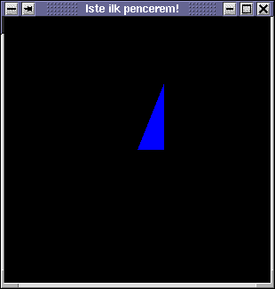
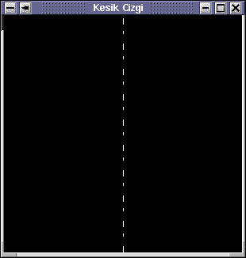
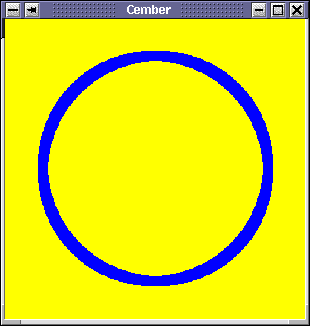
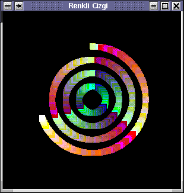
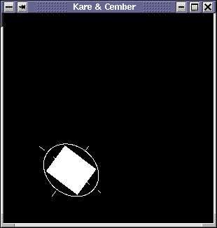

| ||||||
#include <GL/glut.h>
void myDisplay()
{
glClear(GL_COLOR_BUFFER_BIT);
glColor3f (0,0,1);
glBegin(GL_POLYGON);
glVertex2f (0.0, 0.0);
glVertex2f (0.2, 0.0);
glVertex2f (0.2, 0.5);
glEnd();
glFlush();
}
int main (int argc, char ** argv)
{
glutInit (&argc,argv);
glutCreateWindow("Iste ilk pencerem!");
glutDisplayFunc(myDisplay);
glutMainLoop();
return(0);
}

#include <GL/glut.h>
void display(void)
{
glClear(GL_COLOR_BUFFER_BIT);
glColor3f(1,1,1);// white
glEnable(GL_LINE_STIPPLE);
glLineStipple (2, 0x0C0F);
glBegin(GL_LINE_STRIP);
glVertex2f(0,-1);
glVertex2f(0,1);
glEnd();
glFlush();
}
int main(int argc, char **argv)
{
glutInit(&argc, argv);
glutCreateWindow("Kesik Cizgi");
glutDisplayFunc(display);
glutMainLoop();
return(0);
}

#include <GL/glut.h>
#include <math.h>
#include <stdio.h>
#define RADIUS 0.75
void cember(void);
int main(int argc, char ** argv)
{
glutInit(&argc, argv);
glutCreateWindow("Cember");
glutDisplayFunc(cember);
glutMainLoop();
return(0);
}
void cember(void)
{
double x,y;
int i;
glClearColor(1.0,1.0,0.0,0.0);
glClear(GL_COLOR_BUFFER_BIT);
glColor3f(0,0,1);// blue
glPointSize(10.0);
glBegin(GL_POINTS);
for(i = 1; i < 360; i++){
x = RADIUS * sin(((double)i)*M_PI/180);
y = RADIUS * cos(((double)i)*M_PI/180);
#ifdef DEBUG
fprintf(stderr, "(%f, %f)\n", x, y);
#endif
glVertex2f(x,y);
}
glEnd();
glFlush();
}

#include <GL/glut.h>
#include <math.h>
void RenkliCiz(void);
#define RADIUS 0.75
int main(int argc, char **argv)
{
glutInit(&argc, argv);
glutCreateWindow("Renkli Cizgi");
glClearColor (0.1, 0.1, 0.1, 0.0);
glutDisplayFunc(RenkliCiz);
gluOrtho2D (-5.0, 5.0, -5.0, 5.0);
glutMainLoop();
return(0);
}
void RenkliCiz (void)
{
int i, j, k, tur;
double x, y;
int teta=0;
glClear(GL_COLOR_BUFFER_BIT);
glPointSize(12.0);
glBegin(GL_POINTS);
for(i = 0; i <= 10; i++){
for(j = 0; j <= 10; j++){
for(k = 0; k <= 10; k++){
glColor3f (i*0.1, j*0.1, k*0.1);
x = teta; y = x;
#ifdef DEBUG
fprintf(stderr, "teta: %d, Color: %f, %f, %f; (%f, %f)\n",
teta, i*0.1, j*0.1, k*0.1, x,y);
#endif
tur = teta/360;
x = RADIUS*(tur+1)*sin(((double)(teta-tur*360))*M_PI/180);
y = RADIUS*(tur+1)*cos(((double)(teta-tur*360))*M_PI/180);
glVertex2f(x,y);
teta++;
}
}
}
glEnd();
glFlush();
}

#include <GL/glut.h>
#include <GL/gl.h>
#include <GL/glu.h>
#include <math.h>
#include <stdio.h>
#define RADIUS 0.75
#define X0 -1
#define Y0 -1
#define X1 1
#define Y1 1
void cember (void);
void dondur (unsigned char ,int, int);
int teta;
int viewX0, viewY0, viewX1, viewY1;
int
main(int argc, char **argv)
{
printf("Kullanim sekli:\n");
printf("a: sol, d: sag, s: asagi, w: yukari\n");
printf("u: yukari cevir, n: asagi cevir, h: sola cevir, j: saga cevir\n");
printf("b: duzlemde sola dondur, m: duzlemde saga dondur\n");
printf("-: goruntuyu kucult, +: goruntuyu buyut\n");
printf("r: goruntuyu ilk duruma getir, ESC: Cikis\n");
teta=0;
viewX0 = -2; viewX1 = 2; viewY0 = -2; viewY1 = 2;
glutInit(&argc, argv);
glutInitDisplayMode (GLUT_DOUBLE | GLUT_RGB);
glutCreateWindow("Kare & Cember");
glMatrixMode(GL_PROJECTION);
glLoadIdentity();
gluOrtho2D(viewX0, viewX1, viewY0, viewY1);
glutDisplayFunc(cember);
glutKeyboardFunc(dondur);
glutMainLoop();
return(0);
}
void cember(void)
{
double x, y;
int i;
glClearColor(0.0, 0.0, 0.0, 0.0);
glClear(GL_COLOR_BUFFER_BIT);
glColor3f(1, 1, 1);// blue
glBegin(GL_POINTS);
for(i = 1; i < 360; i++){
x = RADIUS * sin(((double)i) * M_PI / 180);
y = RADIUS * cos(((double)i) * M_PI / 180);
glVertex2f(x, y);
}
glEnd();
glColor3f(1, 1, 1);// white
glEnable(GL_LINE_STIPPLE);
glLineStipple (2, 0x0C0F);
glBegin(GL_LINE_STRIP);
glVertex2f(0, -1);
glVertex2f(0, 1);
glEnd();
glBegin(GL_LINES);
glVertex2f(-1, 0);
glVertex2f (1, 0);
glEnd();
glColor3f(1.0, 1.0, 1.0);
glRectf(-0.5, -0.5, 0.5, 0.5);
glBegin(GL_LINES);
glVertex2f(-1, 0);
glVertex2f (1, 0);
glEnd();
glutSwapBuffers();
}
void dondur (unsigned char tus, int x, int y)
{
if (tus == 'd'){
glTranslatef (1.0, 0.0, 0.0);
} else if (tus == 'a'){
glTranslatef (-1.0, 0.0, 0.0);
} else if (tus == 'w'){
glTranslatef (0.0, 1.0, 0.0);
} else if (tus == 's'){
glTranslatef (0.0, -1.0, 0.0);
} else if (tus == 'u'){
glRotatef(15,1.0, 0.0, 0.0);
} else if (tus == 'n'){
glRotatef(15,-1.0, 0.0, 0.0);
} else if (tus == 'h'){
glRotatef(15, 0.0, 1.0, 0.0);
} else if (tus == 'j'){
glRotatef(15, 0.0, -1.0, 0.0);
} else if (tus == 'b'){
glRotatef(15, 0.0, 0.0, 1.0);
} else if(tus == 'm'){
glRotatef(15, 0.0, 0.0, -1.0);
} else if (tus == '+'){
glScalef(1.5, 1.5, 1.5);
} else if (tus == '-'){
glScalef(0.5, 0.5, 0.5);
} else if (tus == 'r'){
glLoadIdentity();
} else if (tus == 27){
exit(0);
}
cember();
}

| |||||||||